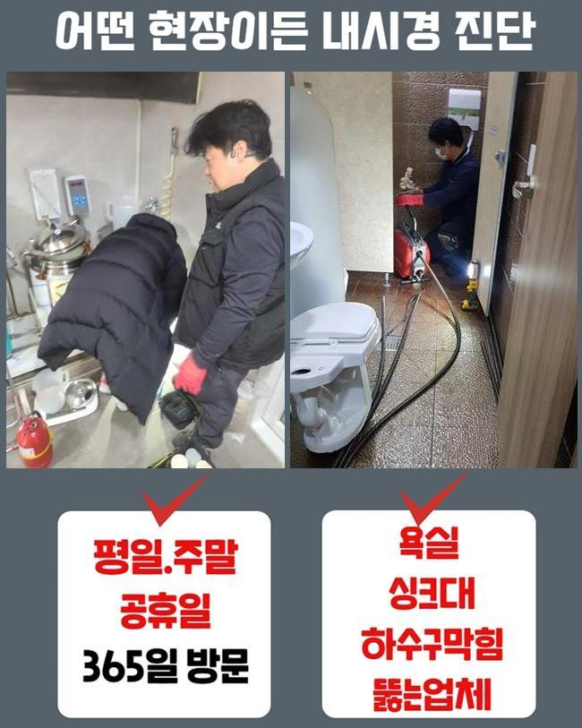
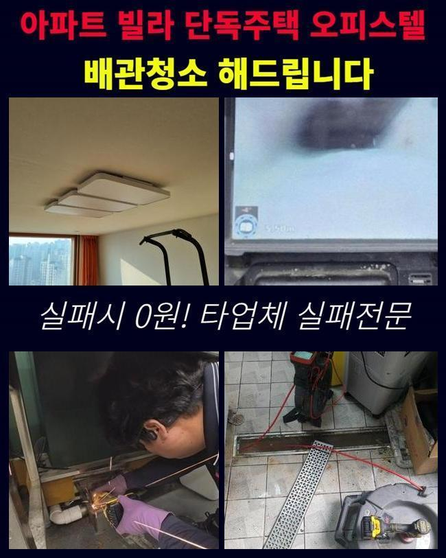
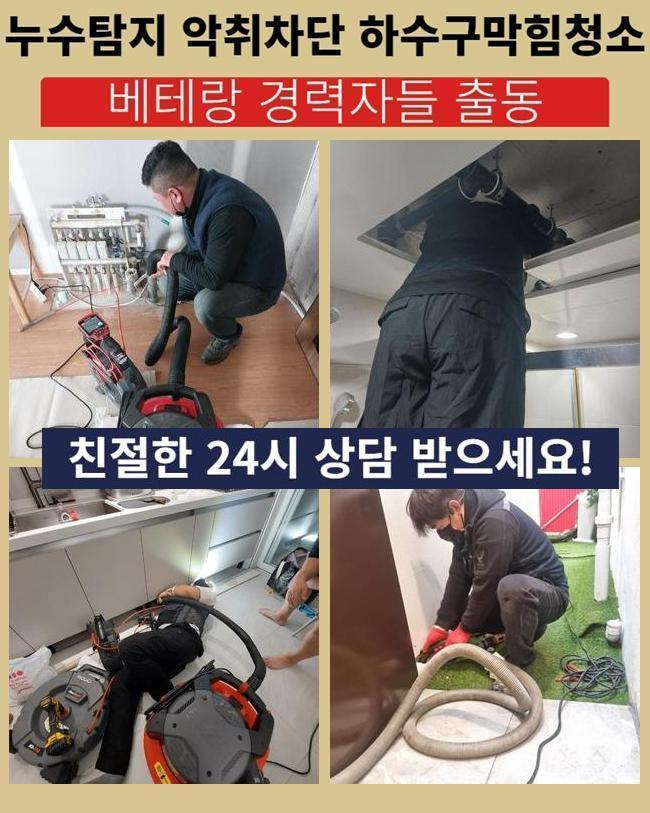
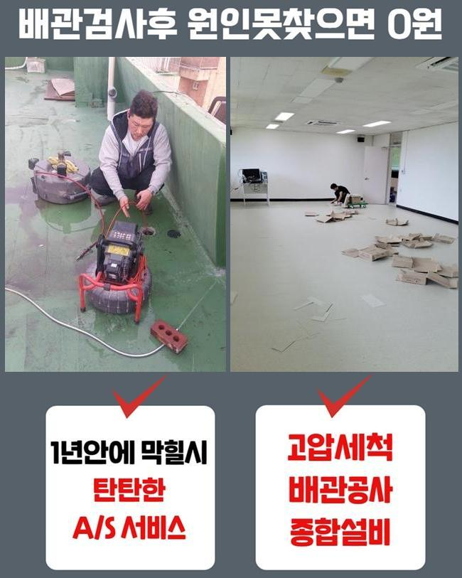
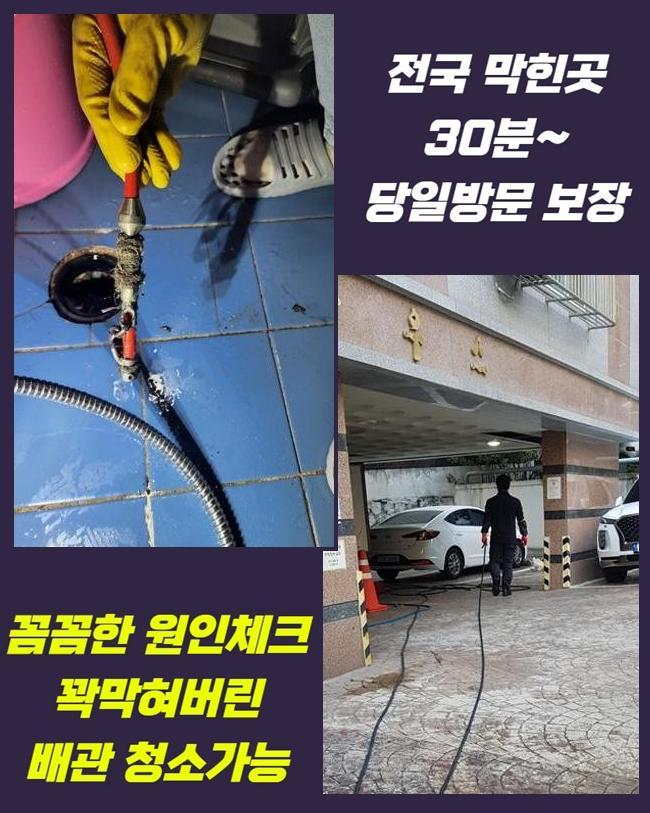
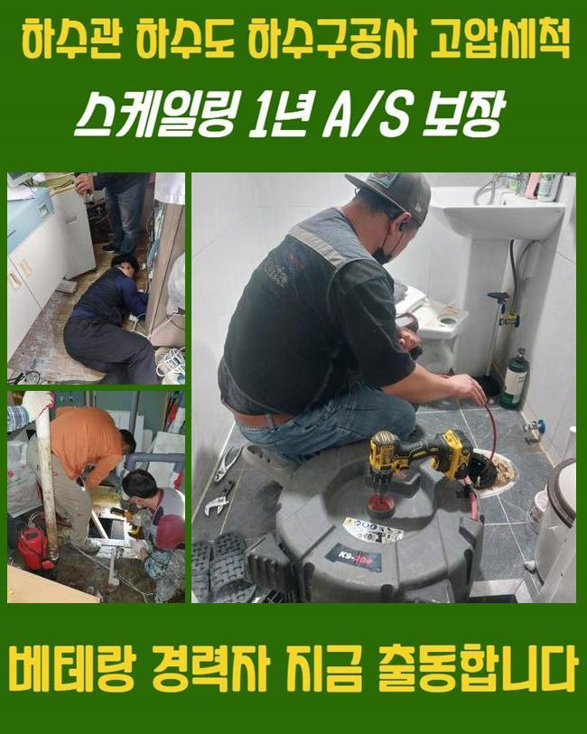
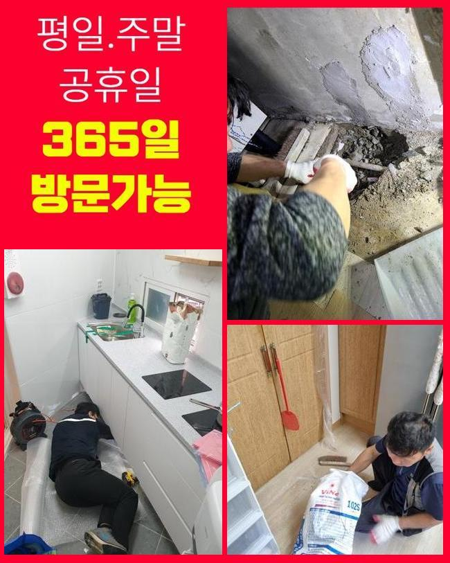

🏠 이천 고담동하수도역류 장호원읍 배관뚫기 부속수리
용인 하수구막힘 전문 시공 후기

📋 작업 개요
- 위치: 용인
- 서비스 유형: 하수구막힘, 배관막힘, 누수수리, 역류해결, 뚫는업체, 배관청소, 악취차단
- 작업 일시: 2024. 11. 18. 12:03
- 업체명: 하수구수사대 (010-5615-2118)
🔍 문제 상황
이천 고담동하수도역류 장호원읍 배관뚫기 부속수리
욕실 내의 하수구가 막힘이 생겨서 수돗물이 소통될 수 없는 경우가 벌어졌어요
사안에 대한 맞춤 조치를 실시하려고 의뢰지를 신속하게 이동하였습니다
다세대 건물이나 공동화장실 등 어떤 곳이라도 개의치 않고 직접 가서 완성도 있게 원상복구를 해드리고 있어요
규모가 큰 건물이거나 통합적인 배관라인을 진단하는 것도 능숙하게 담당할 수 있습니다
상부에 덮힌 필터를 없애고 상태를 평가해 보았는데 밑부분에 누적된 노폐물들이 결합된 채로 머무르고 있었죠
막힘이 초래된 본질적 이유를 규명하려고 저희의 내시경 카메라를 켜서 상황판단을 해봤습니다
알게 모르게 유출된 모발이나 피부 껍질같은 오염원들이 통로에 밀착하면서 문제를 낳은 것이었죠
작은 찌꺼기라도 모이다보면 흐름의 불통이 생겨서 생활의 트러블을 유발하는 것은 기본이며 빠른 조치를 못한다면 배수구의 파열같은 보다 심각한 문제로 구렁이 담넘어 가듯 넘어갑니다
다목적으로 이용한 생활하수는 모두 하수구를 통하기에 항상 배수구의 원만한 작동이 늘 이루어져야 합니다
아예 봉인되어버린 하수구를 어떻게 처치하면 좋을지 감이 안잡히면 하수 설비 전문가를 탐색 하셔서 시공 받으셔야 합니다

🔎 원인 분석
💡 전문가 진단: 정밀 진단 장비를 사용하여 슬러지의 고착 여부를 판명하고 타격/세척 작업을 실시했습니다.
융통성있는 업무를 위해서 배관 특화된 다수의 장비를 지니고 작업지로 이동하니 안심하세요!
배수관에 찰랑찰랑 고인 잔수와 오염원들을 걷어내려고 흡입하는 역할의 석션장비와 전동청소 도구를 활용해요
잿빛의 찌꺼기 집합체를 바깥으로 투출한 다음에 둥둥 떠다니는 조각들과 끈끈한 기름때를 긁어내려고 압박을 하는 관통기나 혹은 액상 클리너를 병행합니다
갖은 수단으로 배관을 말끔히 닦아내주면 악취와 막힘없이 사용과 관리를 하실 수 있습니다
배관용 내시경을 내려보내서 신중하게 관측을 해봤더니 석회질과 모발 등이 한데 뒤섞여 있었습니다
저희 카메라를 더 안쪽으로 배치를 해주는 족족 비위생적인 슬러지 결합체가 우후죽순 발견됐고 반복하다보니 어떤 영역에서 배수구를 원천 차단시킨 본질적인 장애물을 발굴했어요
해당 부분을 정리정돈해서 트러블을 잠재워서 내부 하수관이 원활하게 돌아가도록 조정을 해드렸습니다
바닥 배수구로 뿌연 하수까 정상적으로 빠지지 못하여 바닥에 흥건하게 고인 상태였고 악취와 습기도 진동하는 형상을 하고 있었어요
이렇게 막혀있는 사건은 배관 파열이나 물샘같은 극단적인 상황으로 연결될 수 있으니 얼른 고쳐야 했습니다
저희가 사용하는 샤프트는 회전하는 체인사슬이 연결된 노즐인데 배관 곳곳에 자리한 기름기 어린 때들을 완전히 없애주는 통쾌한 청소도구입니다
샤프트의 구동 원리를 보면 세차게 돌면서 작동하니 파이프에 스크래치가 가지 않도록 세심한 컨트롤을 해야합니다
세심한 조절 능력이 기반이 되어야 하므로 제대로 모르시는 일반분들이 하자없이 쓴다는 건 힘든 일이죠!

🔧 작업 과정
노련미가 없는 분들이 작업에 임해서 배관에 무리한 힘을 가하다가는 배관에 천공이 생길 수 있으니 노하우와 장비 보유력을 구체적으로 조사해야 합니다
용해를 도와줄 액상을 안에다 조금씩 흘려보내주고 약간 대기를 하고나서 거품이 피어오르는 현상을 철저히 확인하고 다음으로 넘어갔어요
묽어진 오염원을 없애려 동일한 작업을 거듭하며 석회물질에 집중하여 제거될 때까지 힘썼습니다
작업하다보면 석회 조각이 외부로 투출되는 경우가 보일 때도 있는데 내측에 석회가 돌덩이처럼 꽉 차서 빈틈이 없는데 장비의 진동때문에 튕겨져 나오는 것이니 염려하지 않으셔도 괜찮습니다
샤프트를 장시간 쓰고나서는 끌어올려주고 대신 석션을 배정해서 관로 내부와 바닥의 잔수를 말끔하게 끌어올립니다
석션의 진공의 힘으로 더럽혀진 하수와 찌꺼기가 일제히 싹 제거가 돼서 배수구가 잘 보이게 만드는 단계를 수행했습니다
배수구 그레이팅을 없애고 진입부가 어떤지 확인했어요
내부의 파편화된 노폐물이 다시 바닥으로 올라오지 못하게 조심스럽게 작업하게 됐고 내시경 기계로 배수구 속을 인식하실 수 있도록 선보여 드리기도 했습니다
배관용 내시경을 쓰면 생중계되는 스크린을 보면서 정화를 보다 꼼꼼히 할 수 있습니다
내부 상황을 스크린으로 띄우지 않으면 무엇때문에 막혔는지에 대한 판단과 문득 나타나는 특이한 점에 유연하게 대처하기가 힘듭니다
그러므로 어떤 상황이라도 내시경을 빠르게 운용할 수 있는 장비보유력이 중요한 것입니다
저희는 항상 내시경을 통해 작업을 이행하고 있고 확보된 데이터를 토대로 철두철미하게 정화작업을 끌어나가고 있어요
내시경을 병용하여 뚫음을 행하게 되면 면밀하고 그리 오래 걸리지 않아도 문제를 해결하니 만족도도 높습니다
가자마자 내시경을 세팅해서 처음으로 선보이며 청소과정을 진행하지만 오늘의 장소는 한눈에 확인하더라도 강하게 막혀있었기에 입구부터 통수부터 내주고 작업 후에 완성도를 보기 위한 용도로 장치를 사용하게 된 것입니다
내시경은 워낙 작기도 하고 긴 몸체를 가진 카메라로써 협소하고 비좁은 배관 안을 들여다볼 수 있게 해줍니다
이번 작업 내역을 슬슬 매듭짓는 시기에 정화해준 배관 속에 내시경을 더 안쪽으로 넣어봤더니 파이프에 조금씩 붙어있는 기름 덩어리와 침전물을 밝혀낼 수 있었습니다
모니터를 통하여 정화되는 현황을 짚어나가면서 잔량이 없도록 석션기로 보기좋게 없애주었습니다
이 이상의 분쇄 작업이 충분하다싶은 시점에는 샤프트를 계속 돌리지 않고 적당하게 썰린 이물질들을 석션기기 안으로 집합시킴으로써 작업을 완수할 수 있었습니다
끝으로 악취까지 봐드리려 트랩 쪽을 봐줬습니다


✅ 작업 완료
트랩을 뒤집어서 확인하니 여러 찌꺼기들이 접착되어서 배출을 방해하는 상황으로 보였습니다
새것으로 교환해드리고 통수 테스트를 몇 번 해보고 주의사항을 안내드렸습니다
꼼꼼한 단계를 완수하여 욕실부근의 여러 막힘이 기분 좋은 결말을 맞이했고 가까운 미래에 재발되거나 냄새가 집으로 확산되는 스트레스 받는 일이 나타나지 않을겁니다
고객님이 겪으시는 배수구 곤란 문제를 가장 효율적으로 종결해 드리도록 하겠습니다
하수구에 비정상적인 문제가 빚어진다면 초기에 접수만 간편하게 넣어주세요




⚠️ 베란다 누수 및 방수 관리 방법
- ✅ 비가 많이 올 때 창틀 주변이나 아래층 천장에 얼룩이 생기는지 정기적으로 확인해 보세요.
- ✅ 우수관 주변 실리콘 마감이 들뜨거나 깨진 틈새가 있는지 손상 여부를 수시로 체크하세요.
- ✅ 베란다 바닥 타일의 줄눈(메지)이 소실되면 그 틈으로 물이 침투하여 누수가 유발됩니다.
- ✅ 누수 의심 증상 발견 시 방치하면 아래층 손실이 커지므로 즉시 전문가의 진단을 받으십시오.
💡 핵심 정리
- 확실한 장비 작업(내시경 점검 및 샤프트 스케일링)으로 원인을 뿌리 뽑습니다.
- 작업 후 1년 이내에 동일한 부위 재발 시 100% 무상 A/S 서비스를 보장합니다.
- 서울 · 경기 · 인천 전 지역에 24시간 언제든 긴급 출동할 수 있도록 항시 대기 중입니다.
❓ 자주 묻는 질문 (FAQ)
🚨 용인 하수구막힘 문제로 고민이신가요?
정확한 원인 진단과 확실한 시공으로 재발 없는 해결을 약속드립니다.
24시간 긴급 출동 | 서울 · 경기 · 인천 전지역 | 1년 내 재발 시 무상 A/S